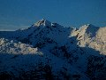
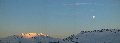
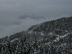

Les Arcs 2003
We went, with Simes, Steff and Daisy, to Les Arcs for a weeks snowboarding holiday. Richard and I had only ever been on a snowboard once before, and that was indoors at the Tamworth Snowdome. So we weren't expecting much from our ability. What we discovered was that real snow is much easier, even than the stuff they have at Tamworth. By the end of the week we'd managed to traverse our way down a couple of runs reasonably successfully, and even managed to link some turns together.
Accommodation:We stayed in Les Alpages du Chantel, self catering accommodation with a balcony, 2 bedrooms, and a well equiped kitchen area (it even had a dishwasher). It is Ski-in/Ski-out accommodation, but it's hard to snowboard to as there is a long flatish run, which is hard to get enough speed up for (especially when you're spending most of your time on your bum).
Piste:Les Arcs have a lot of runs to choose from, and seem to have a good distribution amongst abilities. We spent most of our week using the Chantel chair lift, and snowboarding down the two runs that run parallel (and have cut-throughs from one run to the other). Hint: after fresh snow there's a lovely powder field just below the cable car terminal. The only other run we did was Charmettoger, but this proved tricky in parts for learner snowboarders due to long flat parts, and was really busy as several runs merged together at a couple of points. Check out the piste map.
Food and Drink:We ate in most of the time, and found a couple of supermarkets in Charvet which were reasonably well stocked. One of them, Sherpa, will deliver if you spend over 80 Euros and so we did that. We ate out a couple of times, once at a creperie and once at a Tex Mex place - both in Charvet, both pretty good.
Equipment Hire:We'd arranged our equipment hire through our tour operator and could go to any of the local branches of Ski Set. The equipment we got was really good quality, mine was a Burton board and bindings, and Rich had a Salomon board and bindings, and we both had Salomon boots. Another time I might buy some boots so that I could be sure of a good fit, but I'd still hire a board as it seems much easier than lugging it around an airport.
Getting around:There is a free bus that runs between Charvet and Chantel (and so serves Les Apages du Chantel). There is also a bus that runs between Charvet and the main centre of Arc 1800, and also down to Arc 1600. We never left Charvet, although Steff had to venture down to Arc 1600 to file a police report for her missing snowboard (she put it onto one of the buses and it wasn't there when she got off - make sure the carrier at the back has a chain on it before putting your board/skis on!).
Getting there:We flew to Lyon, which is a 3.5 hour coach ride away. Geneva is closer, and Chambrey is closer still (although the reps told us that Chambrey often has long delays). The Eurostar goes from London to Bourg St Maurice on a Friday and Saturday during winter as an overnight service.
Note: These are the scenic and general photos. There will be a set of Jane and Richard falling oversnowboarding when we get the film developed
(49 images.)
Back to index
Daisy in a trolley |
We've arrived | 
Mountains |
Simes slips over |

Path down to Charvet |
Sunset and vapour trail |
Night view |
Morning moon |
Sunrise over mountains | 
Moon and Mountains Panorama | 
Mountains and trees | 
Panorama from the balcony |
Daisy and her shoe |
Simes, Steff, Daisy and a luge |
Daisy in her luge |
Mountains and trees again |
Daisy |
Lights and sky |
Night sky and trees |
Clouds in the valley |
Daisy and the window |
It's snowing |
Snowy trees |
Trees, snowman and mountains |
Heavy branch |
Another heavy branch |
Richard in the snow |
Tree lined path |
Branch under snow |
Chair lifts and snow cannons |
Fence posts |
Tree with snow |
Tree in cloud | 
More clouds over the valley |
Daisy takes to the bottle |
Daisy points it out |
Mountains break through the cloud |
Valley of clouds |
Snowladen trees |
More snowladen trees |
Lots of snow on a branch |
Our accommodation |
Trees by the path | 
Sun on the mountains |
Cloud filled valley |
Bus |
Hut amongst the trees |
Cloud levels and sun |
Daisy does Tex Mex |
Back to index